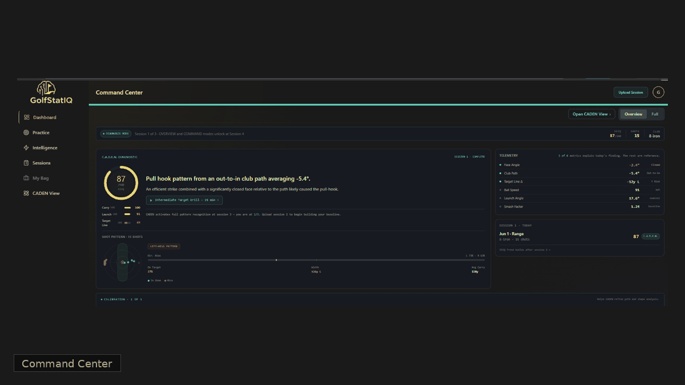

GolfStatIQ puts an AI golf coach in your pocket, using your launch monitor data and our proprietary StrikeSigmaIQ™ to reveal exactly why you miss shots and give you a clear path to improve.
Invited golfers get early builds, direct access to the founder, and a hand in shaping v1.
You invested in a launch monitor to get better, but now you're drowning in numbers. Ball speed, launch angle, spin axis. What do you actually do with it all?
Your launch monitor is great at telling you what happened. It's not designed to tell you why.
GolfStatIQ bridges that gap. We analyze your session data to find the hidden patterns in your misses, giving you actionable insights that lead to real improvement.
Simply drag and drop the data export from your launch monitor. CSV, Excel, we handle it all.
Our engine generates your unique StrikeSigmaIQ™ and a full suite of analytics to diagnose everything from strike quality to your deepest miss tendencies.
Get clear, personalized feedback and drills designed to fix your swing flaws.
Live Command Center, real data, live diagnostics.

What pre-alpha means here. A working backend, a live Command Center UI, an evolving SSIQ scoring engine, and a small invited cohort. Things will change. Your feedback shapes the v1.
From the Bay
Avg club path
−5.4°
15 shots, 8-iron
What 15 shots on my 8-iron actually told me, once I stopped staring at face angle and started reading the pattern in the path.
Request access to the pre-alpha. Live build, real data, evolving with your feedback.